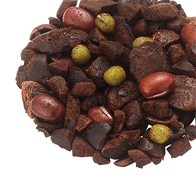
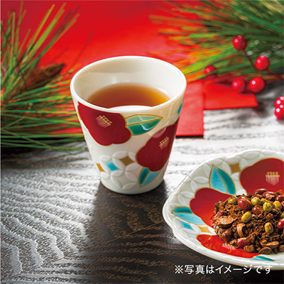
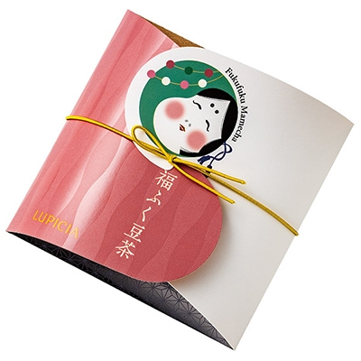

LUPICIA L610 · g22261210
후쿠후쿠 마메차
福ふく豆茶
Fukufuku Mamecha 40g limited package
NEW수량한정논카페인



まめに、元気に、福を呼ぶ。
「9752 福ふく豆茶」の40g限定デザインパッケージ入です。
紙を優しく重ね合わせることで生まれる柔らかな曲線のフォルムと、温かみを感じさせる結び紐。直線的な箱にはない立体的な奥行きで、日本の伝統的な「包み」の所作と美意識を表現しました。
中央には、福を呼ぶ「お多福」をあしらい、めでたき趣と手仕事のぬくもりを閉じ込めています。
四種類の豆（黒豆、大豆、小豆、緑豆）が「四つの福」を表し、健やかで至福のひと時に繋がるようにと願いを込めた「福ふく豆茶」は、お年賀の贈りものとしてもおすすめです。
福ふく豆茶：黒豆や大豆など、福を呼び込む4種の豆をブレンドしたノンカフェインの豆のお茶。ほっこり甘く香ばしい風味が、至福（四福）のひと時を運んできます。
- 상품번호
- L610
- 상품 형태
- 40g 한정パッケージ入
- 가격
- 800円
- 판매 안내
- ※수량・기간한정
※상미기한：제조일로부터1년
※차의 풍미를 해치지 않게, 서둘러 드세요. - 원재료
- 黒大豆、大豆、小豆、緑豆※商品の改定などにより、商品パッケージの記載内容が上記内容と一部異なる場合がございます。
다른 포장
보관된 상품 정보 갱신일: 2026-11-19